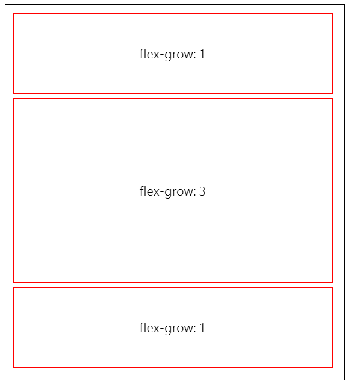
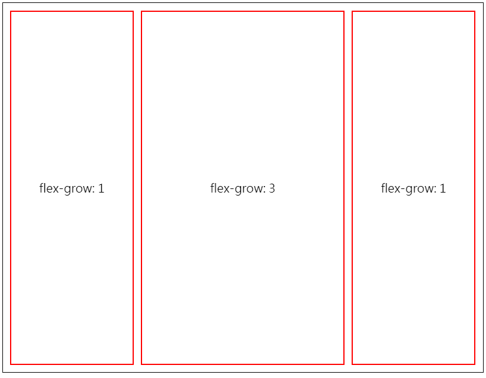

學習目標
- 學習
flex-grow屬性.
flex-grow 屬性
flex-grow 的定義是，當要分配父層的剩餘空間時，會依照其子元素的 flex-grow 屬性的數值來決定這些子元素會各分配到多少的剩餘空間，並且，會依照 flex-grow 屬性的大小來決定該子元素會是其他子元素的幾倍大 (這一篇對於 flex-grow 的定義講得蠻清楚的)。
我這邊講的幾倍大，可能有人會有疑問，所以，是長跟寬同時成倍數放大嗎?
其實不是，要看此元素所待的父元素的 flex-direction 是 row ，還是 column ，如果是 row 的話，則是寬度比剩餘元素還大上幾倍，若是 column ，則為高度比剩餘元素大上幾倍。
我畫張圖可能會比好理解我以上的文字的意思

以上的圖片為當父層的 flex-direction 為 column 的時候，flex-grow 影響的是高度的倍數

以上的圖片為當父層的 flex-direction 為 row 的時候，flex-grow 影響的是寬度的倍數
什麼是 flexible 元素?
在 W3School 對 flex-grow 的描述中，有特別說了一下這段話
Note: If the element is not a flexible item, the flex-grow property has no effect.
以上這段話的中文意思為: 如果指定元素不是 flexible 元素，則flex-grow對它是沒有作用的。
Question: 那什麼叫做 flexible 元素呢?
Ans: 代表此元素的父層是含有 display: flex 的屬性。
Ex:
1 | .father { |
上面的範例中，child 這個元素就是一個 flexible 的元素，因為，它的父層 father 是具有 display: flex 的屬性，而 test 就是一個獨立的元素沒有具有 display: flex 的屬性的父層，所以，flex-grow: 1 對它是沒有作用的。
那注意到 grand-son 也有加入 flex-grow 的屬性，但是，是沒有作用的喔，因為它的父層元素是 child 但它並沒有 display: flex 的屬性，所以，會沒有作用。
usage of flex-grow property
筆者經手的專案中，蠻常使用 flex-grow 的屬性，來做某個區塊的上下部分切割。
以上這個範例，整體的 DOM 布局為最外層的父層有 display: flex 屬性，它有兩個同階層的子層，分別為 child-1 和 child-2。
我對位在下方的 child-2 元素加上了 flex-grow: 1 的屬性，而上方的 child-1 元素還是保持 flex-grow: 0 的預設值，這代表了，child-1 不會配有任何的剩餘空間，而只會配給 child-2 的那一份。這也就代表了，剩餘空間將被 child-2 所佔有。
如此，我們就能透過 flex-grow 來處理要分配多少空間給特定的子元素了。
Conclusion
- 要處在具有 display:flex 屬性的父元素底下的子元素，對其設定 flex-grow 才有效用。
- flex-grow 用來決定父層的剩餘空間要分配給多少空間給子元素。